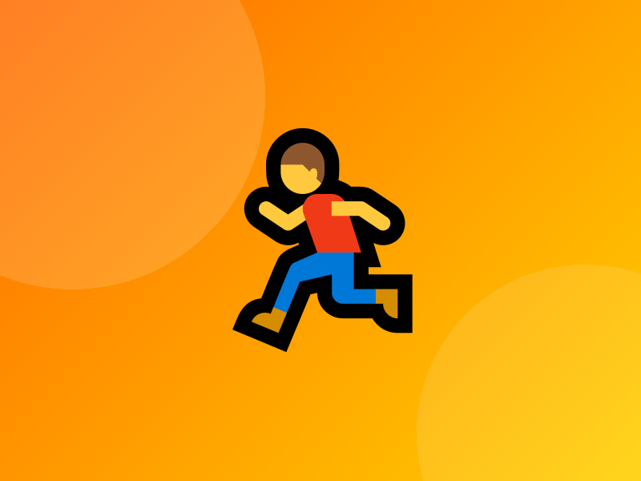

<!DOCTYPE html>
<html lang="zh-CN">
<head>
    <meta charset="UTF-8">
    <meta name="viewport" content="width=device-width, initial-scale=1.0, maximum-scale=1.0, user-scalable=no">
    <title>常聚 · 圈子</title>
    <link rel="stylesheet" href="tailwind.css">
    <link rel="stylesheet" href="theme.css">
</head>
<body class="cj-theme">
<div id="app" class="cj-page"></div>
<script src="vendor/lucide.min.js"></script>
<script src="data.js"></script>
<script src="rotation.js"></script>
<script src="common.js"></script>
<script>
window.CircleView = (function () {
    const TYPE_LABEL = { dinner: '饭局', sport: '运动', boardgame: '棋牌', outdoor: '户外', classmate: '同学', colleague: '同事', family: '家人', hobby: '兴趣', mahjong: '麻将', ball: '球局', exhibit: '看展', ktv: 'K歌' };

    function circleOf(id) {
        return window.GlobalData.circles.find(c => c.id === id);
    }

    function lastGatheringOf(circle) {
        return window.GlobalData.gatherings.find(g => g.id === circle.lastGatheringId);
    }

    function nowStr() {
        return window.Common.fmtDate(window.Demo.getNow());
    }

    function hostCard(circle) {
        const host = (circle.members || []).find(m => m.id === circle.hostId);
        const g = lastGatheringOf(circle);
        const r = window.Rotation.checkRhythm({ circle, lastGatheringTime: g ? g.time : null, now: nowStr() });
        let right, progress;
        if (r.due) {
            right = '<div class="cj-host-days" style="margin-left:auto;text-align:right"><b>' + r.daysSince + ' 天</b><span class="cj-sub">没聚啦，该张罗啦</span></div>';
            progress = '<div class="cj-progress"><i style="width:100%"></i></div>';
        } else if (circle.rhythm && g && r.daysSince !== null) {
            const days = circle.rhythm.unit === 'week' ? circle.rhythm.n * 7 : circle.rhythm.n * 30;
            const left = days - r.daysSince;
            const pct = Math.min(100, Math.round(r.daysSince / days * 100));
            right = '<div class="cj-host-days" style="margin-left:auto;text-align:right"><b>' + left + ' 天</b><span class="cj-sub">距下次相聚</span></div>';
            progress = '<div class="cj-progress"><i style="width:' + pct + '%"></i></div>';
        } else {
            right = '<div class="cj-host-days" style="margin-left:auto;text-align:right"><b>随缘</b><span class="cj-sub">想聚就聚</span></div>';
            progress = '';
        }
        return '<div class="cj-host-card">' +
            '<div class="cj-row" style="gap:12px">' +
                (host ? '' : '') +
                '<div>' +
                    '<div class="cj-host-label">当值张罗</div>' +
                    '<div class="cj-title" style="font-size:16px;margin-top:2px">' + (host ? host.name : '待定') + '</div>' +
                '</div>' +
                right +
            '</div>' + progress +
        '</div>';
    }

    function timeline(circle) {
        const items = window.GlobalData.gatherings
            .filter(g => g.circleId === circle.id)
            .sort((a, b) => (a.time < b.time ? 1 : -1));
        if (items.length === 0) {
            return '<div class="cj-empty">还没有聚会记录<br>组一局吧，第一张合影从今天开始</div>';
        }
        return items.map((g, i) => {
            const photo = g.photos && g.photos[0];
            return '<a class="cj-pola ' + (i % 2 === 0 ? 'cj-pola-r1' : 'cj-pola-r2') + '" style="display:block;text-decoration:none" href="record.html?id=' + g.id + '">' +
                (photo ? '<div class="cj-tape"></div>' : '<div class="cj-tape"></div>') +
                '<div class="cj-pola-cap">' +
                    '<div class="cj-pola-date">' + g.time + '</div>' +
                    '<div class="cj-pola-title">' + g.title + '</div>' +
                '</div>' +
            '</a>';
        }).join('');
    }

    function folks(circle) {
        return '<div class="cj-folks">' + (circle.members || []).map(m =>
            '<div class="cj-folk"><div class="cj-folk-name">' + m.name + '</div></div>').join('') + '</div>';
    }

    function render(circleId) {
        const circle = circleOf(circleId);
        if (!circle) return window.Common.renderShell('圈子') + '<div class="cj-empty">圈子不存在</div>';
        return window.Common.renderShell(circle.name) +
            '<div class="cj-cityline"><span class="cj-pill cj-pill-plain">' + (TYPE_LABEL[circle.type] || circle.type) + '</span> <span class="cj-pill cj-pill-plain">' + circle.members.length + ' 位圈友</span> <span class="cj-pill cj-pill-due" style="cursor:pointer" onclick="window.CircleView.invite()">群卡片邀请</span></div>' +
            hostCard(circle) +
            '<div class="cj-section-head"><b>记忆时间轴</b><span class="cj-sub" style="margin-left:auto;cursor:pointer" onclick="window.CircleView.miss(\'' + circle.id + '\')">想念大家了 💭</span></div>' +
            timeline(circle) +
            '<div class="cj-section-head"><b>圈友</b></div>' +
            folks(circle) +
            '<a class="cj-btn cj-fab" style="text-decoration:none" href="propose.html?circle=' + circle.id + '">张罗个局</a>' +
            window.Common.renderTabbar('circles');
    }

    // "想念大家了"：全体圈友收到模拟服务通知 + 落库
    function miss(circleId) {
        const circle = circleOf(circleId);
        if (!circle) return;
        const G = window.GlobalData;
        const me = G.user;
        G.notifications.push({
            id: 'n-' + Date.now().toString(36),
            circleId,
            type: 'miss',
            text: me.name + '想大家了：好久没聚，抽空见一面吧',
            read: false
        });
        window.Common.save();
        window.Common.showWechatNotice({ title: '常聚 · 服务通知', body: me.name + ' 在「' + circle.name + '」说：想大家了 💭' });
        window.Common.showToast('想念已送达每一位圈友');
    }

    function invite() {
        window.Common.showToast('邀请卡片已复制，去微信群粘贴吧');
    }

    return { render, miss, invite };
})();
(function () {
    const params = new URLSearchParams(window.location.search);
    document.getElementById('app').innerHTML = window.CircleView.render(params.get('id') || 'c1');
})();
window.Common.initIcons();
window.Demo.mountFab();
</script>
</body>
</html>
